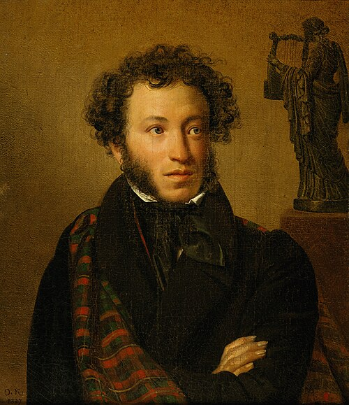

Pusjkin og vår slekt

Denne siden viser slektskapet mellom vår familielinje fra Barbara Jochumsdatter Grabow (1631–1695) og to linjer ned fra Aleksander Pusjkin — én mot Westminster (Grosvenor) og én mot Mountbatten (Milford Haven). Pusjkin-linjene er like fra slektsledd 0–8 (Barbara til og med grevinne Sophie von Merenberg); fra slektsledd 9 skiller de seg mellom søstrene Zia og Nada de Torby.
| Gen | Vår linje | Slektskap | Westminster-linjen | Mountbatten-linjen |
|---|